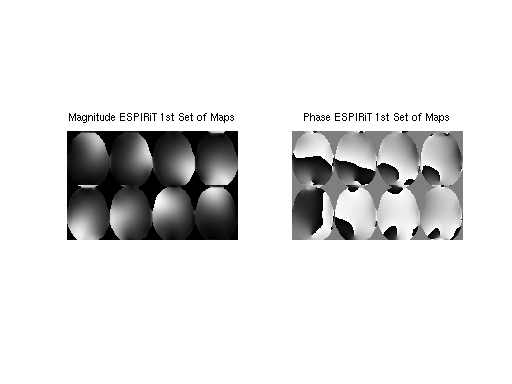
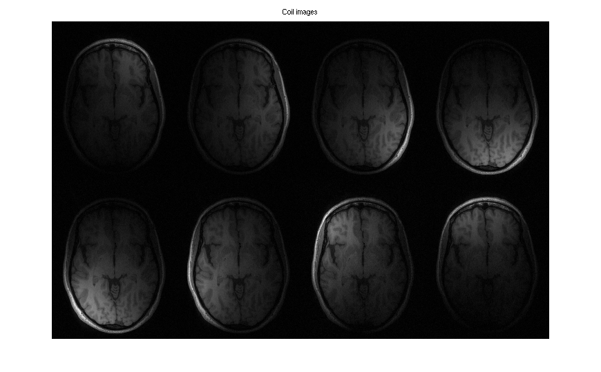
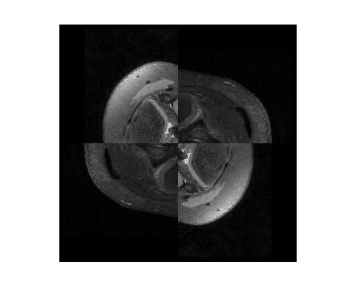

Contents
function examples
ESPIRiT examples (based on work by Sana Vaziri)
To begin, add '$(TOOLBOX_PATH)/matlab' to the library path and clear the LD_LIBRARY_PATH environment variable (to work around a bug in Matlab). The environment variable TOOLBOX_PATH needs to be set to the base directory of the reconstruction tools package.
if isempty(getenv('TOOLBOX_PATH')) error('Environment variable TOOLBOX_PATH is not set.'); end addpath(strcat(getenv('TOOLBOX_PATH'), '/matlab')); setenv('PATH', strcat(getenv('TOOLBOX_PATH'), ':', getenv('PATH'))); if ismac==1 setenv('DYLD_LIBRARY_PATH', ''); else setenv('LD_LIBRARY_PATH', ''); end
The input and output datasets are each stored in a pair of files: one header (.hdr) and one raw data (.cfl). All the data files used in this demo are in the data folder. The readcfl and writecfl Matlab methods can be found in $(TOOLBOX_PATH)/matlab and can be used to view and process the data and reconstructed images in Matlab.
Example 1: ESPIRiT reconstruction (R = 2x2)
The example uses ESPIRiT to obtain the image from 2x2 undersampled data.
create directory for data for example 1
if exist('data_ex1')==0 mkdir('data_ex1') ; end
A visualization of k-space data and sampling and zero-filled reconstruction
% sqrt sum-of-squares of k-space S 'rss 3 data/und2x2 data_ex1/ksp_rss' % zero-filled reconstruction sqrt-sum-of-squares S 'fft -i 6 data/und2x2 data_ex1/zf_coils' S 'rss 3 data_ex1/zf_coils data_ex1/zf_rss' ksp_rss = squeeze(readcfl('data_ex1/ksp_rss')); zf_rss = squeeze(readcfl('data_ex1/zf_rss')); figure,subplot(1,2,1), imshow(abs(ksp_rss).^0.125, []); title('k-space') subplot(1,2,2), imshow(abs(zf_rss), []); title('zero-filled recon')

Show singular values of the calibration matrix
S 'ecalib -r 20 -1 -V data/und2x2 data_ex1/calib | grep SVALS > data_ex1/svals.dat' fid = fopen('data_ex1/svals.dat'); SV = fscanf(fid, 'SVALS %*d %f\n'); fclose(fid); figure, plot(SV); title('Singular Values of the Calibration Matrix');

ESPIRiT calibration (using a maximum calibration region of size 20)
S 'ecalib -r 20 data/und2x2 data_ex1/calib data_ex1/emaps'
Calibration region... (size: 1x20x20, pos: 0x105x80) Build calibration matrix and SVD... Eigen decomposition... (size: 288) Using 56/288 kernels (19.44%, last SV: 0.031736). Zeropad... FFT (juggling)... Calculate Gram matrix... Resize... Point-wise eigen-decomposition... Fix phase... Crop maps... (0.80) Done.
Print header of the produced file:
S 'cat data_ex1/calib.hdr'
# Dimensions 1 230 180 8 2 1 1 1 1 1 1 1 1 1 1 1
Extraction of first set of maps (0-th subarray along dimension 4)
S 'slice 4 0 data_ex1/calib data_ex1/sens' sens_maps = squeeze(readcfl('data_ex1/sens')); figure, subplot(121), imshow3(abs(sens_maps), [],[2,4]); title('Magnitude ESPIRiT 1st Set of Maps') subplot(122), imshow3(angle(sens_maps),[],[2,4]) title('Phase ESPIRiT 1st Set of Maps')
For comparison: Produce coil images from fully-sampled data using the fft command. It uses a bitmask as argument to specify the dimensions which are transformed. Here, the bitmask is 6 = 2^1 + 2^2 which corresponds to the dimensions 1 and 2.
S 'fft -i 6 data/full data_ex1/coilimgs' coil_imgs = squeeze(readcfl('data_ex1/coilimgs')); figure, imshow3(abs(coil_imgs), [],[2,4]) title('Coil images')
Show eigenvalue maps
emaps = squeeze(readcfl('data_ex1/emaps')); figure, imshow3(emaps, [], [1, 2]); title('First Two Eigenvalue Maps')
SENSE reconstruction using ESPIRiT maps
S 'sense data/und2x2 data_ex1/sens data_ex1/reco' sense_recon = squeeze(readcfl('data_ex1/reco')); figure, imshow(abs(sense_recon), []); title('ESPIRiT Reconstruction')
Size: 41400 Samples: 10650 Acc: 3.89 Total Time: 1.119940

Evaluation of the coil sensitivities.
% % Computing error from projecting fully sampled error % onto the sensitivities. This can be done with one % iteration of POCSENSE. % S 'pocsense -r 0. -i 1 data/full data_ex1/sens data_ex1/proj' % Compute error: full - proj S 'saxpy -- -1. data/full data_ex1/proj data_ex1/errmaps' % Transform error into image domain and combine into a single map. S 'fft -i 6 data_ex1/errmaps data_ex1/errimgs' S 'rss 3 data_ex1/errimgs data_ex1/errsos_espirit' % % For comparison: compute sensitivities directly from the center. S 'caldir 20 data/und2x2 data_ex1/sens_direct' % Compute error map. S 'pocsense -r 0. -i 1 data/full data_ex1/sens_direct data_ex1/proj' S 'saxpy -- -1. data/full data_ex1/proj data_ex1/errmaps' S 'fft -i 6 data_ex1/errmaps data_ex1/errimgs' S 'rss 3 data_ex1/errimgs data_ex1/errsos_direct' errsos_espirit = squeeze(readcfl('data_ex1/errsos_espirit')); errsos_direct = squeeze(readcfl('data_ex1/errsos_direct')); figure, imshow(abs([errsos_direct errsos_espirit]), []); title('Projection Error (direct calibration vs ESPIRiT)');
Reconstruction... Done Done. Calibration region 1x20x20 Done. Reconstruction... Done Done.
Example 2: Reconstruction of undersampled data with small FOV.
This example uses a undersampled data set with a small FOV. The image reconstructed using ESPIRiT is compared to an image reconstructed with SENSE. By using two sets of maps, ESPIRiT can avoid the central artifact which appears in the SENSE reconstruction.
create directory for data for example 2
if exist('data_ex2')==0 mkdir('data_ex2') ; end %
% Zero padding to make square voxels since resolution in x-y for this % data set is lower in phase-encode than readout S 'resize -c 2 252 data/smallfov data_ex2/smallfov' % Direct calibration of the sensitivities from k-space center for SENSE S 'caldir 20 data_ex2/smallfov data_ex2/sensemaps' % SENSE reconstruction S 'sense data_ex2/smallfov data_ex2/sensemaps data_ex2/sensereco' % ESPIRiT calibration with 2 maps to mitigate with aliasing in the calibration S 'ecalib -r 20 -m 2 data_ex2/smallfov data_ex2/espiritmaps' % ESPIRiT reconstruction with 2 sets of maps S 'sense data_ex2/smallfov data_ex2/espiritmaps data_ex2/espiritreco' % Combination of the two ESPIRiT images using root of sum of squares S 'rss 4 data_ex2/espiritreco data_ex2/espiritreco_rss' espirit_maps = squeeze(readcfl('data_ex2/espiritmaps')); figure, imshow3(abs(espirit_maps), [],[2,8]) title('The two sets of ESPIRiT maps')
Calibration region 1x20x20 Done. Size: 80640 Samples: 27167 Acc: 2.97 Total Time: 2.026715 Calibration region... (size: 1x20x20, pos: 0x150x116) Build calibration matrix and SVD... Eigen decomposition... (size: 288) Using 73/288 kernels (25.35%, last SV: 0.034162). Zeropad... FFT (juggling)... Calculate Gram matrix... Resize... Point-wise eigen-decomposition... Fix phase... Crop maps... (0.80) Done. 2 maps. ESPIRiT reconstruction. Size: 80640 Samples: 27167 Acc: 2.97 Total Time: 2.222212 Warning: Image is too big to fit on screen; displaying at 50%
% SENSE image: reco1 = squeeze(readcfl('data_ex2/sensereco')); figure, subplot(1,2,1), imshow(abs(reco1), []) title('SENSE Reconstruction') % ESPIRiT image: reco2 = squeeze(readcfl('data_ex2/espiritreco_rss')); subplot(1,2,2), imshow(abs(reco2), []) title('ESPIRiT Reconstruction from 2 maps')
Example 3: Compressed Sensing and Parallel Imaging
This example demonstrates L1-ESPIRiT reconstruction of a human knee. Data has been acquired with variable-density poisson-disc sampling.
create directory for data for example 3
if exist('data_ex3')==0 mkdir('data_ex3') ; end
% A visualization of k-space data S 'rss 3 data/knee data_ex3/ksp_rss' ksp_rss = squeeze(readcfl('data_ex3/ksp_rss')); figure, imshow(abs(ksp_rss).^0.125, []); title('k-space') % Root-of-sum-of-squares image S 'fft -i 6 data/knee data_ex3/knee_imgs' S 'rss 3 data_ex3/knee_imgs data_ex3/knee_rss' % ESPIRiT calibration (one map) S 'ecalib -c0. -m1 data/knee data_ex3/knee_maps' % l1-regularized reconstruction (wavelet basis) S 'sense -l1 -r0.005 data/knee data_ex3/knee_maps data_ex3/knee_l1' % Results knee_rss = squeeze(readcfl('data_ex3/knee_rss')) / 1.5E9; knee_l1 = squeeze(readcfl('data_ex3/knee_l1')); image = [ knee_rss knee_l1 ]; figure, imshow(abs(image), []) title('Zero-filled and Compressed Sensing/Parallel Imaging')
Calibration region... (size: 1x24x24, pos: 0x132x106) Build calibration matrix and SVD... Eigen decomposition... (size: 288) Using 61/288 kernels (21.18%, last SV: 0.032264). Zeropad... FFT (juggling)... Calculate Gram matrix... Resize... Point-wise eigen-decomposition... Fix phase... Crop maps... (0.00) Done. l1-wavelet regularization Size: 67968 Samples: 8082 Acc: 8.41 Total Time: 10.710756

Example 4: Basic Tools
Various tools are demonstrated by manipulating an image.
create directory for data for example 4
if exist('data_ex4')==0 mkdir('data_ex4') ; end
% Zero pad S 'resize -c 1 300 data_ex3/knee_l1 data_ex4/tmp' S 'resize -c 2 300 data_ex4/tmp data_ex4/knee2' % Switch dimensions 1 and 2 S 'transpose 1 2 data_ex4/knee2 data_ex4/tmp' % Scale by a factor of 0.5 S 'scale 0.5 data_ex4/tmp data_ex4/tmp2' % Join original and the transposed and scaled version along dimension 2. S 'join 2 data_ex4/knee2 data_ex4/tmp2 data_ex4/joined' % Flip 1st and 2nd dimension (2^1 + 2^2 = 6) S 'flip 6 data_ex4/joined data_ex4/tmp' % Join flipped and original along dimension 1. S 'join 1 data_ex4/joined data_ex4/tmp data_ex4/big' % Extract sub-array S 'extract 1 150 449 data_ex4/big data_ex4/tmp' S 'extract 2 150 449 data_ex4/tmp data_ex4/small' % Circular shift by 115 pixels S 'circshift 1 150 data_ex4/small data_ex4/tmp' S 'circshift 2 150 data_ex4/tmp data_ex4/shift' % Show the final result. image = readcfl('data_ex4/shift'); figure, imshow(abs(squeeze(image)), []); % end global function
end % octave doesn't support the ! syntax function S(x); system(x); end